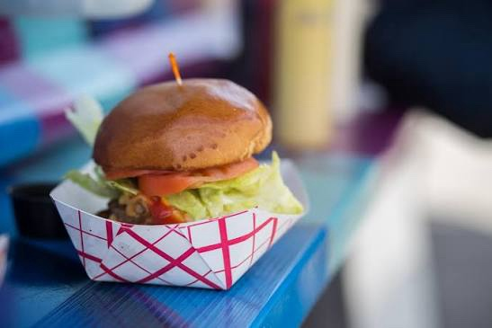

The Dish Index
Every signature in the record, grouped by the dish itself.
Tacos & Burritos (161)
- Al Pastor Tacos (Kapa'a, Hawaii) — Al pastor tacos
- Automatic Taco (Greenville, South Carolina) — Automatic tacos
- Avenue 26 Tacos (Los Angeles, California) — Night-market tacos
- Aztec Dave's (Chicago, Illinois) — Dave's tacos and burritos
- Bacon Bacon (San Francisco, California) — Bacon burrito
- Barrio Tacos Truck (Cleveland, Ohio) — Build-your-own tacos
- Basilio's Tacos (Boise, Idaho) — Basilio's tacos
- Big Truck Tacos (Oklahoma City, Oklahoma) — The Thunder burrito
- Birria-Landia (New York, New York) — Birria tacos with consommé
- Blue Donkey Tacos (Oklahoma City, Oklahoma) — Baja tacos
- Boka Tako (Richmond, Virginia) — Tako trucks' tacos
- Bonsai Asian Tacos (Santa Fe, New Mexico) — Bonsai tacos
- Breaking Burrito (Sioux Falls, South Dakota) — Breaking burritos
- Burrito Azteca (Portland, Oregon) — Azteca burritos
- Burrito Buggy (Athens, Ohio) — Buggy burritos
- Caja Caliente (Miami, Florida) — Cuban tacos
- Calexico (New York, New York) — Crack sauce burritos
- Cantina on Wheels (Birmingham, Alabama) — Birmingham tacos
- Cha Cha Chow (St. Louis, Missouri) — Rotating world tacos
- Chadito's (Springfield, Illinois) — Capital City tacos
- Chando's Tacos (Sacramento, California) — Chando's mulitas
- Chela's Tacos (San Antonio, Texas) — Street tacos al pastor
- Chilo's (Brooklyn, New York) — Chilo's tacos
- Cilantro Tacos Truck (Gainesville, Florida) — Cilantro tacos
- Comida (Denver, Colorado) — Comida tacos from Tina's truck Pink
- Coreanos (Houston, Texas) — The OG burrito
- Corner Taco (Jacksonville, Florida) — Corner tacos
- Country Boys Tacos (Brooklyn, New York) — Red Hook tacos
- Cucina Zapata (Philadelphia, Pennsylvania) — Captain Crunch shrimp burrito
- Curry Up Now (San Francisco, California) — Tikka masala burrito
- Dai Due Taqueria (Austin, Texas) — Dai Due tacos
- Dark Shark Tacosicle (Savannah, Georgia) — Tacos and pops
- Deckhand Dave's (Juneau, Alaska) — Wild Alaska fish tacos
- Discada (Austin, Texas) — Discada tacos (cowboy wok)
- District Taco Truck (Washington, District of Columbia) — District tacos
- Domo Taco (New York, New York) — Miso tacos
- Don't Look Back Truck (Richmond, Virginia) — Don't look back tacos
- Eddie's Tacos (Rapid City, South Dakota) — Eddie's tacos
- El Camión (Seattle, Washington) — Burritos and fish tacos
- El Chato Taco Truck (Los Angeles, California) — Al pastor burrito
- El Corazón (Portland, Maine) — Burritos and tacos
- El Cotorro (Albuquerque, New Mexico) — Tacos and elotes
- El Gallo Giro (San Francisco, California) — Gallo giro tacos
- El Guapo (Detroit, Michigan) — Baja fish tacos and elotes
- El Huarache Loco (San Francisco, California) — Huaraches
- El Kimchi (Asheville, North Carolina) — Kimchi tacos
- El Nutri Taco (Portland, Oregon) — Nutri tacos
- El Oasis (Lansing, Michigan) — Burritos the size of a forearm
- El Patron (Worcester, Massachusetts) — Worcester tacos
- El Rapido (Tucson, Arizona) — Rapido burritos
- El Rey Del Sabor (New York, New York) — Puebla-style tacos
- El Sancho (Bend, Oregon) — Sancho tacos
- El Taurino (Los Angeles, California) — Taurino tacos al pastor
- El Tonayense (San Francisco, California) — Mission-style tacos
- El Ultimo Taco (Houston, Texas) — Bistec tacos
- Far East Taco Grille (Washington, District of Columbia) — Far East tacos
- Garbo's Grill (Key West, Florida) — Lobster rolls and fish tacos
- Geakers Tacos (Allentown, Pennsylvania) — Geakers tacos
- Guerrilla Tacos (Los Angeles, California) — Sweet potato taco
- Hang 10 Tacos (Los Angeles, California) — Baja fish tacos
- Holy Molé (Louisville, Kentucky) — Mole tacos
- Indios Carbonsitos (Kansas City, Missouri) — Charcoal-grilled tacos
- Jamburritos Cajun Kitchen (Phoenix, Arizona) — Jambalaya burritos
- Jefe's Original Fish Taco (Miami, Florida) — Baja fish tacos
- Jogasaki (Los Angeles, California) — Sushi burrito
- Juan Taco Truck (Charlotte, North Carolina) — Juan's tacos
- Junior's Tacos (Columbus, Ohio) — Junior's tacos
- Kiko's Place (San Diego, California) — Smoked tuna tacos
- Killer Tacos (Kailua-Kona, Hawaii) — Killer tacos
- Kimchi Taco (New York, New York) — Kimchi tacos
- King Taco (Los Angeles, California) — Suadero tacos
- Kogi BBQ (Los Angeles, California) — Short rib taco
- Koi Fusion (Portland, Oregon) — Korean tacos and sliders
- Korean BBQ Taco Box (Orlando, Florida) — Taco box specials
- Korilla BBQ (New York, New York) — Korilla burritos and bowls
- Kung Fu Tacos (San Francisco, California) — Nun Chuck chicken taco
- La Cocinita (New Orleans, Louisiana) — Arepas and patacones
- Leo's Tacos Truck (Los Angeles, California) — Tacos al pastor
- Live Music Tacos (Austin, Texas) — Capital City tacos
- Lloyd Taco Truck (Buffalo, New York) — Beef on weck tacos
- Los Chilangos (Bellevue, Washington) — Chilango tacos
- Los Guachos (Columbus, Ohio) — Trompo al pastor tacos
- Los Taquitos de Puebla (Philadelphia, Pennsylvania) — Puebla tacos
- Luchador Food Truck (Las Cruces, New Mexico) — Luchador tacos
- Mama Kim's (Providence, Rhode Island) — Korean BBQ tacos
- Maria Bonita (Omaha, Nebraska) — Bonita tacos
- Marination Mobile (Seattle, Washington) — Spam sliders and kimchi quesadillas
- Mariscos El Pescador (Chula Vista, California) — Fish tacos and ceviche tostadas
- Mariscos Jalisco (Los Angeles, California) — Tacos de camarón
- Mas Tacos Por Favor (Nashville, Tennessee) — Quinoa sweet potato tacos
- Matt's BBQ Tacos (Portland, Oregon) — Brisket tacos
- Mexicue (New York, New York) — Smoked short rib tacos
- Mission Taco Truck (St. Louis, Missouri) — Mission tacos
- Muiishi Makirritos (Houston, Texas) — Sushi burritos
- Ninja Tacos (Rockford, Illinois) — Stateline tacos
- Nom Nom Truck (Los Angeles, California) — Banh mi and lemongrass tacos
- North Shore Tacos (Haleiwa, Hawaii) — North Shore tacos
- Off the Rez (Seattle, Washington) — Indian tacos on frybread
- Oh My Gogi! (Houston, Texas) — Gogi fries and kimchi quesadillas
- Pgh Taco Truck (Pittsburgh, Pennsylvania) — Steel City tacos
- Poco Loco Tacos (Cranston, Rhode Island) — Rhode Island tacos
- Port Fonda (Kansas City, Missouri) — Baja-style tacos and elote
- Pueblo Viejo (Austin, Texas) — Breakfast tacos
- Red Sesame (Cincinnati, Ohio) — Korean tacos and bowls
- Revolution Taco (Philadelphia, Pennsylvania) — Revolution tacos
- Robo Taco (Portland, Oregon) — Robo burritos
- Rollin' Fatties (New Orleans, Louisiana) — Fat burritos
- Rosita's Al Pastor (Austin, Texas) — Tacos al pastor
- Salsa Limón (Fort Worth, Texas) — El Capricho tacos
- Seabirds Kitchen Truck (Costa Mesa, California) — Beer-battered avocado tacos
- Seoul Taco (St. Louis, Missouri) — Bulgogi tacos and burritos
- Seoul on Wheels (San Francisco, California) — Korrito (Korean burrito)
- Señor Grubby's (Oceanside, California) — California burrito
- Señor Sisig (San Francisco, California) — Sisig burrito
- Spork (Bend, Oregon) — Spicy pork tacos
- Surfside Taco Truck (Washington, District of Columbia) — Surfside fish tacos
- Taceaux Loceaux (New Orleans, Louisiana) — Messin' with Texas brisket taco
- Taco Heads (Fort Worth, Texas) — Breakfast tacos
- Taco Maria (Costa Mesa, California) — Alta-California tacos
- Taco Republic Truck (Kansas City, Kansas) — Street-style tacos
- Taco Sano (Missoula, Montana) — Sano tacos
- Taco Tank (Kansas City, Missouri) — Tank tacos
- Taco de Paco (Baton Rouge, Louisiana) — Red Stick tacos
- Tacoholics (El Paso, Texas) — Border tacos
- Tacopocolypse (Des Moines, Iowa) — Vegan and classic tacos
- Tacos Arabes (Los Angeles, California) — Tacos árabes
- Tacos El Gallito (Los Angeles, California) — Harbor-area tacos
- Tacos El Regio (San Antonio, Texas) — Monterrey-style tacos
- Tacos Morelos (Brooklyn, New York) — Morelos tacos and huaraches
- Tacos Sinaloa (Oakland, California) — Sinaloa-style tacos
- Tacos Tierra Caliente (Houston, Texas) — Barbacoa tacos
- Tacos Tumbras (Spokane, Washington) — Street tacos
- Takorean (Washington, District of Columbia) — Korean tacos
- Taqueria Maldonado's (Green Bay, Wisconsin) — Maldonado tacos
- Tenoch (Medford, Massachusetts) — Torta campechana
- Tex's Tacos (Atlanta, Georgia) — Nueva Texicana tacos
- Texas Burrito Company (Dallas, Texas) — Texas burritos
- The Chayo (Omaha, Nebraska) — Chayo tacos
- The Funky Taco (Boise, Idaho) — Funky tacos
- The Peached Tortilla (Austin, Texas) — Banh mi tacos
- The Salsa Truck (Chicago, Illinois) — Salsa verde tacos
- The Surfer Taco (Los Angeles, California) — Surfer tacos
- The Taco Bus (Tampa, Florida) — Bus tacos and tortas
- The Taco Guys (San Francisco, California) — Taco guys' tacos
- The Taco Truck (Hoboken, New Jersey) — Authentic tacos al pastor
- The Tin Kitchen (Charlotte, North Carolina) — Tin Kitchen tacos
- The Traveling Kitchen (Louisville, Kentucky) — Korean tacos
- The Vegan Nom (Austin, Texas) — Nom tacos
- Tight Tacos (Portland, Oregon) — Tight tacos
- Torchy's Tacos (Austin, Texas) — The Trailer Park taco
- Tortas Neza (New York, New York) — Giant tortas (the Torta Pumas)
- Tyson Bees (Philadelphia, Pennsylvania) — Korean BBQ tacos
- Valentina's Tex Mex BBQ (Austin, Texas) — The Real Deal Holyfield taco
- Vehicle City Tacos (Flint, Michigan) — Vehicle city tacos
- Veracruz All Natural (Austin, Texas) — Migas taco
- Verde Food Truck (Boulder, Colorado) — Verde burritos
- Volunteer Tacos (Knoxville, Tennessee) — Volunteer tacos
- West Coast Tacos (Indianapolis, Indiana) — West Coast-style tacos
- White Rabbit Truck (Los Angeles, California) — Sisig burritos
- World Street Kitchen (Minneapolis, Minnesota) — Bangkok burrito
- Yeyo's (Bentonville, Arkansas) — Mezcal-country tacos
Lobster & Seafood Rolls (48)
- B.O.'s Fish Wagon (Key West, Florida) — Fish wagon sandwiches
- Bite into Maine (Cape Elizabeth, Maine) — Maine lobster rolls (picnic style)
- Blue Water Shrimp (Honolulu, Hawaii) — Blue water shrimp plates
- Chesapeake Crab Wagon (Annapolis, Maryland) — Bay crab cakes
- Cousins Maine Lobster (Los Angeles, California) — Maine lobster roll
- Cousins Maine Lobster (Atlanta) (Atlanta, Georgia) — Maine lobster roll
- Cousins Maine Lobster (Charlotte) (Charlotte, North Carolina) — Maine lobster roll
- Cousins Maine Lobster (Chicago) (Chicago, Illinois) — Maine lobster roll
- Cousins Maine Lobster (Dallas) (Dallas, Texas) — Maine lobster roll
- Cousins Maine Lobster (Denver) (Denver, Colorado) — Maine lobster roll
- Cousins Maine Lobster (Houston) (Houston, Texas) — Maine lobster roll
- Cousins Maine Lobster (Las Vegas) (Las Vegas, Nevada) — Maine lobster roll
- Cousins Maine Lobster (Nashville) (Nashville, Tennessee) — Maine lobster roll
- Cousins Maine Lobster (Orlando) (Orlando, Florida) — Maine lobster roll
- Cousins Maine Lobster (Phoenix) (Phoenix, Arizona) — Maine lobster roll
- Cousins Maine Lobster (Raleigh) (Raleigh, North Carolina) — Maine lobster roll
- Cousins Maine Lobster (Salt Lake City) (Salt Lake City, Utah) — Maine lobster roll
- Cousins Maine Lobster (San Diego) (San Diego, California) — Connecticut lobster roll
- Da Lobsta (Chicago, Illinois) — New England lobster rolls
- Devilicious (San Diego, California) — Butter-poached lobster grilled cheese
- Empanola NOLA (New Orleans, Louisiana) — Crawfish empanadas
- First State Fish Wagon (Rehoboth Beach, Delaware) — First State fish plates
- Flash Crabcake Co (Baltimore, Maryland) — Maryland crabcakes
- Geste Shrimp Truck (Kahului, Hawaii) — Maui garlic shrimp
- Giovanni's Shrimp Truck (Kahuku, Hawaii) — Garlic shrimp plate
- God Save the Cuisine (San Diego, California) — Fish and chips
- Highroller Lobster Co (Portland, Maine) — Lobster rolls from the cart
- La Isla Bonita (Los Angeles, California) — Ceviche and shrimp cocktails
- Like Poke (Kahului, Hawaii) — Fresh poke bowls
- LoLo's Bowls (Wichita, Kansas) — Grain and poke bowls
- Lobsta Truck (Los Angeles, California) — Lobster roll
- LobsterCraft (Fairfield, Connecticut) — Captain Mike's lobster rolls
- Longshot Lobsta (Louisville, Kentucky) — Lobster rolls
- Macky's Sweet Shrimp (Kahuku, Hawaii) — Sweet shrimp plates
- Nosh (Seattle, Washington) — Fish and chips
- Poke to the Max (Seattle, Washington) — Sam Choy's poke
- Red Hook Lobster Pound (New York, New York) — Maine lobster roll
- Red Hook Lobster Pound (DC) (Washington, District of Columbia) — Lobster rolls
- South Maui Fish Co (Kihei, Hawaii) — Fresh fish plates
- The Dire Lion (Omaha, Nebraska) — Fish and chips and meat pies
- The Fish Box (Miami, Florida) — Fish box plates
- The Frying Scotsman (Portland, Oregon) — Scotsman fish supper
- The Immortal Lobster (Charleston, South Carolina) — Lobster rolls
- The Kilted Kod (Boise, Idaho) — Kilted fish suppers
- The Lime Truck (Irvine, California) — Lime ceviche and ahi nachos
- The Maine Lobster Lady (Scottsdale, Arizona) — Maine lobster rolls in the desert
- Tracy's Crab Shack Truck (Juneau, Alaska) — King crab buckets
- Where Ya At Matt (Seattle, Washington) — Shrimp po'boy
Grilled Cheese & Melts (47)
- American Meltdown (Durham, North Carolina) — Meltdown melts
- Badger Melt Wagon (Madison, Wisconsin) — Badger melts
- Caseus Cheese Truck (New Haven, Connecticut) — Caseus classic melt
- Cheesy Street (Kansas City, Missouri) — Kansas City melts
- Drewski's (Sacramento, California) — The Hemi sandwich
- Fancheezical (Providence, Rhode Island) — Rhody melts
- Frencheeze (New Orleans, Louisiana) — French-accented melts
- Gorilla Cheese (New York, New York) — Gorilla melts
- Grilled Cheese Grill (Portland, Oregon) — The Jaime (sweet grilled cheese)
- Grilled Cheese Mania (Harrisonburg, Virginia) — Mania melts
- Lil Cheezers (Louisville, Kentucky) — Derby City melts
- Lone Star Melt (Dallas, Texas) — Lone Star melts
- Marco's Grilled Cheese (Iowa City, Iowa) — Hawkeye melts
- Melt Alaska (Anchorage, Alaska) — Northern melts
- Melt Birmingham (Birmingham, Alabama) — Magic City melts
- Melt Your Heart (Asheville, North Carolina) — Heart melts
- Melted (Appleton, Wisconsin) — Fox Valley melts
- Morris Grilled Cheese (New York, New York) — Morris melts
- Motor City Melt (Detroit, Michigan) — Motor City melts
- Ms. Cheezious (Miami, Florida) — Award-winning melts
- Music City Melt (Nashville, Tennessee) — Honky-tonk melts
- Oh My Grill (Pittsburgh, Pennsylvania) — Oh my melts
- Papi Queso (Charlotte, North Carolina) — Papi's melts
- Roxy's Grilled Cheese (Boston, Massachusetts) — Green Muenster melt
- Ruthie's Rolling Café (Dallas, Texas) — The Ruthie melt
- Say Cheese Philly (Philadelphia, Pennsylvania) — Say cheese melts
- Say Cheese Truck (Memphis, Tennessee) — Memphis melts
- Smoky Mountain Melt (Knoxville, Tennessee) — Mountain melts
- Snowday (New York, New York) — Maple grilled cheese
- Stripchezze (Las Vegas, Nevada) — Strip melts
- The Big Cheese (Arlington, Virginia) — Big cheese melts
- The Big Cheesy (Lafayette, Louisiana) — Cajun melts
- The Cheese Cart (Eugene, Oregon) — Oregon cheddar melts
- The Cheesy Chick (Buffalo, New York) — Cheesy melts
- The Golden Grill (Houston, Texas) — Golden melts
- The Gouda Girls (Milwaukee, Wisconsin) — Wisconsin cheese melts
- The Grilled Cheese Experience (Seattle, Washington) — Experience melts
- The Grilled Cheese Incident (San Luis Obispo, California) — Incident melts
- The Grilled Cheese Truck (Los Angeles, California) — Cheesy mac and rib melt
- The Grilled Cheeserie (Nashville, Tennessee) — The B&B of Tennessee melt
- The Happy Grilled Cheese (Jacksonville, Florida) — Happy melts
- The Melt Mobile (White Plains, New York) — Melt mobile melts
- The Meltdown STL (St. Louis, Missouri) — Meltdown melts
- The Milk Truck (New York, New York) — Milk Truck classic melt
- The Ultimate Melt (Seattle, Washington) — Ultimate melts
- The Whey Station (Middletown, Connecticut) — Whey-out melts
- Tillamook Melt Wagon (Tillamook, Oregon) — Coastal melts
Burgers & Sliders (67)
- Aioli Gourmet Burgers (Phoenix, Arizona) — Aioli burgers
- BRGR Truck (Pittsburgh, Pennsylvania) — BRGR burgers
- BUNS (Seattle, Washington) — Gourmet burgers on the go
- Baby's Badass Burgers (Los Angeles, California) — The Good Wife burger
- Bang Bite (Santa Fe, New Mexico) — Bang burgers
- Bernie's Burger Bus (Houston, Texas) — The Principal burger
- Boston Burger Company Truck (Boston, Massachusetts) — BBC burgers
- Bravas (Fort Wayne, Indiana) — Patatas bravas and burgers
- Burger Queen (Ketchikan, Alaska) — Burger queen stacks
- Burger Walla (Newark, New Jersey) — Walla burgers
- Burgers Ya Heard (New Orleans, Louisiana) — Smash burgers
- Burntzilla (Irvine, California) — Slider and zilla dogs
- Chubby's Food Truck (San Diego, California) — Chubby burgers
- Curbside Burgers (Baton Rouge, Louisiana) — Curbside smash burgers
- Doc's of the Bay (Oakland, California) — The Doc's burger
- Easy Slider (Dallas, Texas) — The Sweet + Lowdown slider
- Excaliburger (Little Rock, Arkansas) — The Excaliburger
- Fivetenburger (Oakland, California) — The Fiveten burger
- Flip 'n Patties (Houston, Texas) — Akaushi burgers and siopao fries
- Frites 'N' Meats (New York, New York) — Frites and burgers
- Fukuburger (Las Vegas, Nevada) — The Tamago burger
- Get It On A Bun At Booty's (Louisville, Kentucky) — Booty's buns
- Grill 'Em All (Los Angeles, California) — Heavy-metal burgers (the Behemoth)
- Grilling Shilling (Baton Rouge, Louisiana) — Bayou burgers
- Haven Brothers (Providence, Rhode Island) — Haven Brothers burgers and fries
- Hoss' Loaded Burgers (Nashville, Tennessee) — Loaded burgers
- KoJa Kitchen (San Francisco, California) — Original KoJa (garlic rice bun burger)
- Kooper's Chowhound (Baltimore, Maryland) — Chowhound burgers
- Krush Burger (Sacramento, California) — Mini burgers by the handful
- Latin Burger and Taco (Miami, Florida) — Latin Macho burger
- Lexie's Joint (Portsmouth, New Hampshire) — Lexie's burgers
- Luke's Inside Out (Austin, Texas) — Inside-out burgers
- MIHO Gastrotruck (San Diego, California) — The MIHO burger
- Mainely Burgers (Scarborough, Maine) — Maine burgers
- Mix'd Up (Atlanta, Georgia) — Mix'd Up burger creations
- Monster Burgers (Miami, Florida) — Monster burgers
- Motor Mouth (Cleveland, Ohio) — Motor-mouth burgers
- PDX Sliders (Portland, Oregon) — Sellwood slider
- Porterhouse Burger Truck (Greensboro, North Carolina) — Porterhouse burgers
- Rocket Fine Street Food (Providence, Rhode Island) — Rocket burgers
- Scotty's Go-Go Grill (Omaha, Nebraska) — Go-go smash burgers
- Scratch Truck (Indianapolis, Indiana) — Made-from-scratch burgers
- Serial Grillers (Tucson, Arizona) — Serial cheesesteaks
- Shredderz (Detroit, Michigan) — Shredderz stacks
- Skillet (Seattle, Washington) — Bacon jam burger
- Slide Food Cart (Madison, Wisconsin) — Library Mall sliders
- Slidin' Dirty (Troy, New York) — Dirty sliders and tots
- Slidin' Thru (Las Vegas, Nevada) — Vegas sliders
- Spot Gourmet Burgers (Philadelphia, Pennsylvania) — The Spot burger
- Summersault Truck (Fresno, California) — Central Valley burgers
- The Bite KC (Kansas City, Missouri) — The bite burgers
- The Black Market Food Truck (Buffalo, New York) — Black market burgers
- The Burger Bus (Santa Barbara, California) — The SB burger
- The Butcher's Son (Dallas, Texas) — Gourmet sausage sandwiches
- The Chuck Truck (Greenville, South Carolina) — Chuck burgers
- The Crafthouse Gastrotruck (Lubbock, Texas) — Hub City burgers
- The Inslider (San Diego, California) — Gourmet mini burgers
- The Local Bison (Tulsa, Oklahoma) — Bison burgers
- The Missing Link (Shreveport, Louisiana) — Missing link sausages
- The Moral Omnivore (Minneapolis, Minnesota) — Mushroom walnut burgers
- The Only Burger (Durham, North Carolina) — The only burger
- The People's Burger (Seattle, Washington) — People's burgers
- The Slide Ride (Chicago, Illinois) — Gourmet sliders
- The Spot (Des Moines, Iowa) — The Spot smash burger
- The Steer and Wheel (Pittsburgh, Pennsylvania) — Steer burgers
- Wagyu Wagon (Chicago, Illinois) — Wagyu burgers
- Wicked Hangry (Oklahoma City, Oklahoma) — Hangry burgers
Pizza (32)
- 314 Pie (Seattle, Washington) — Savory hand pies
- Andolini's Food Truck (Tulsa, Oklahoma) — Pizza slices and meatballs
- Basic Kneads (Denver, Colorado) — Wood-fired pies
- Blue Ridge Pizza Co (Charlottesville, Virginia) — Wood-fired pies
- Casey's Pizza Truck (San Francisco, California) — Truck pies
- Catch-a-Fire Pizza (Cincinnati, Ohio) — Wood-fired Neapolitan pies
- Completely Sauced (St. Louis, Missouri) — Sauced plates
- DC Slices (Washington, District of Columbia) — Jumbo slices
- Del Popolo (San Francisco, California) — Neapolitan pies from a glass truck
- Eddie's Pizza Truck (New York, New York) — Bar pies
- Fire and Slice (Salt Lake City, Utah) — Fire-sliced pies
- Gabiano's Pizza Shack (Portland, Oregon) — Shack pies
- Gepetto's Pizza Truck (Fort Worth, Texas) — Gepetto's pies
- Il Segreto (Boise, Idaho) — Secret pies
- Jiannetto's Pizza Truck (New York, New York) — Grandma slices
- Love Verona (Portland, Oregon) — Wood-fired pizza
- Lucky Slice Truck (Ogden, Utah) — Lucky slices
- Marty McPies (Corpus Christi, Texas) — Wood-fired pies
- Mikey's Late Night Slice (Columbus, Ohio) — Late-night slices
- Mozzeria Truck (San Francisco, California) — Neapolitan pies
- Outrigger Pizza (Kihei, Hawaii) — Outrigger pies
- Pitruco Pizza (Philadelphia, Pennsylvania) — Wood-fired pies
- Slide Piece (St. Louis, Missouri) — Wood-fired slices
- That Pizza Place (Carlsbad, California) — Wood-fired slices
- The Hall's Pizza Kitchen (Oklahoma City, Oklahoma) — Wood-fired truck pies
- The Hungry Robot (Fairbanks, Alaska) — Wood-fired robot pies
- The Rolling Stonebaker (Detroit, Michigan) — Stonebaked pies
- The Saucee Sicilian (Oklahoma City, Oklahoma) — Sicilian-style slices
- Toss 'n' Fire (Syracuse, New York) — Wood-fired pies
- Valducci's Pizza Truck (New York, New York) — Original thin-crust slices
- Via 313 (Austin, Texas) — The Detroiter pizza
- Wheels on Fire (Denver, Colorado) — Mile High pies
Waffles, Crepes & Breakfast (46)
- Babycakes (Chicago, Illinois) — Pancake stacks to go
- Belgian Waffle Crafters (Raleigh, North Carolina) — Crafted waffles
- Bing Mi (Portland, Oregon) — Jianbing crepes
- Bing of Fire (Seattle, Washington) — Jianbing on the go
- Biscuit Love Truck (Nashville, Tennessee) — The East Nasty biscuit sandwich
- Citizen Hash (Indianapolis, Indiana) — Citizen hash plates
- Crepen' Around (Los Angeles, California) — Crepes around town
- Crepes à la Carte (New Orleans, Louisiana) — Sweet and savory crepes
- Crescent City Crepes (New Orleans, Louisiana) — Crescent City crepes
- Dancakes (St. Louis, Missouri) — Pancake portraits
- Delta Biscuit Company (Jonesboro, Arkansas) — Biscuit sandwiches
- Denver Biscuit Co Truck (Denver, Colorado) — The Franklin biscuit sandwich
- Dolce VT (Burlington, Vermont) — Dolce crepes
- Foolish Waffles (Philadelphia, Pennsylvania) — Waffle sandwiches
- Fried Egg I'm in Love (Portland, Oregon) — Egg sandwich on sourdough
- Hash Browns & New Grounds (Morgantown, West Virginia) — Mountaineer breakfast plates
- Holy Crepe (Athens, Georgia) — Classic City crepes
- Jammin' Crepes (Princeton, New Jersey) — Sweet and savory crepes
- Little Skillet (San Francisco, California) — Fried chicken and waffles
- Marty's Waffles (Cincinnati, Ohio) — Marty's waffle sandwiches
- Mei Mei (Boston, Massachusetts) — Double Awesome scallion pancake sandwich
- Miss Shirley's Truck (Baltimore, Maryland) — Chicken and waffles
- Outta My Huevos (Charleston, South Carolina) — Huevos plates
- Ozark Mountain Biscuit Co (Columbia, Missouri) — Biscuit sandwiches
- Parlez-Vous Crêpe (Durham, North Carolina) — Parlez-vous crepes
- Planet of the Crepes (Tucson, Arizona) — Planet crepes
- Press Waffle Co Truck (Milwaukee, Wisconsin) — Liege waffle sandwiches
- Salt Box Café (Cape Elizabeth, Maine) — Tiny-truck breakfast sandwiches
- Smaaken Waffles (Portland, Oregon) — Stroopwafel-style waffle sandwiches
- The Belgian Waffle Truck (Columbia, South Carolina) — Belgian waffles
- The Cracked Truck (Champaign, Illinois) — Breakfast sandwiches and tots
- The Crepe Company (Orlando, Florida) — Crepe company crepes
- The Drunken Waffle (Dayton, Ohio) — Drunken waffle sandwiches
- The Ginger Pig (Boulder, Colorado) — Beijing street crepes and dumplings
- The Lobos Truck (Los Angeles, California) — Wachos (waffle-fry nachos)
- The Skinny Pancake (Burlington, Vermont) — Savory and sweet crepes
- The Waffle Bus (Houston, Texas) — Waffle fries and chicken waffle sandwiches
- The Waffle Lab (Fort Collins, Colorado) — Liege waffle plates
- The Waffle Wagon (Fayetteville, Arkansas) — Wagon waffles
- Two Crepes (Jersey City, New Jersey) — Downtown crepes
- Two for the Road (San Diego, California) — Cap'n Crunch french toast
- Viva La Waffle (Lafayette, Louisiana) — Viva waffle sandwiches
- Volkswaffle (Sacramento, California) — Waffle plates
- Wafels & Dinges (New York, New York) — Liège wafel with spekuloos
- Waffle Love (Provo, Utah) — The Red Wonder waffle
- Zinneken's (Boston, Massachusetts) — Brussels waffles
Banh Mi & Vietnamese (12)
- AutoBanh (Charleston, South Carolina) — Banh mi sandwiches
- Bon Me (Boston, Massachusetts) — Bon Me banh mi
- Chief Brody's Banh Mi (New Haven, Connecticut) — Banh mi sandwiches
- Hoangie's Banh Mi (San Diego, California) — Classic banh mi
- Lone Wolf Banh Mi (Tulsa, Oklahoma) — Banh mi and kimchi fries
- Mandoline Grill (Los Angeles, California) — Mandoline banh mi
- Nammi Truck (Dallas, Texas) — Banh mi sandwiches
- Phamish (Los Angeles, California) — Pho and banh mi
- PhoWheels (Washington, District of Columbia) — Pho and banh mi
- Saigon Slim's (New Orleans, Louisiana) — Banh mi and pho
- The Great Pho King Truck (Phoenix, Arizona) — Pho king bowls
- The Hungry Turtle (Richmond, Virginia) — Turtle banh mi
Ice Cream & Sweets (69)
- Art City Donuts (Springville, Utah) — Mini donuts
- Baron Von Schwein (Lancaster, Pennsylvania) — Pulled pork and bacon desserts
- Beaver's Donuts (Chicago, Illinois) — Mini donuts with toppings
- Big Gay Ice Cream (New York, New York) — The Salty Pimp soft serve
- Bold City Pops (Jacksonville, Florida) — Bold City pops
- Clyde's Cupcakes (Exeter, New Hampshire) — Clyde's cupcakes
- Cookie Monstah (Boston, Massachusetts) — Cookie ice cream sandwiches
- Coolhaus (Los Angeles, California) — Architectural ice cream sandwiches
- Coolhaus (New York) (New York, New York) — Ice cream sandwiches
- Cupcake Stop (New York, New York) — Cupcake stop cakes
- Destination Desserts (St. Louis, Missouri) — Destination sweets
- Doughboys Donuts (Reno, Nevada) — Biggest Little donuts
- EuroDish (Portland, Oregon) — Pierogi and kielbasa
- Fairycakes (San Jose, California) — Fairy cupcakes
- Fifty Licks (Portland, Oregon) — Small-batch scoops
- Frozen Hoagies (Boston, Massachusetts) — Hoagie-style ice cream sandwiches
- Frozen Kuhsterd (San Francisco, California) — Kuhsterd cups
- Goodies Frozen Custard (Washington, District of Columbia) — Wisconsin-style custard
- Gourdough's (Austin, Texas) — The Flying Pig donut
- Heavenly Donut Truck (Birmingham, Alabama) — Heavenly donuts
- Hey Cupcake! (Austin, Texas) — Whipper Snapper cupcake
- Icedgems (Baltimore, Maryland) — Iced cupcakes
- Kelvin Slush (New York, New York) — Ginger slush with mix-ins
- King of Creams (Duluth, Minnesota) — North Shore scoops
- King of Pops (Atlanta, Georgia) — Handcrafted pops (Sea Salt Chocolate)
- King of Pops (Charleston) (Charleston, South Carolina) — King of pops
- King of Pops (Charlotte) (Charlotte, North Carolina) — King of pops
- Like No Udder (Providence, Rhode Island) — Coconut-based scoops
- Loblolly Scoop Shop Truck (Little Rock, Arkansas) — Arkansas-made scoops
- Love Kupcakes (Portland, Maine) — Kupcakes from the cart
- Melt Bakery (New York, New York) — Morticia (chocolate) sandwich
- Mrs. Yoder's Kitchen (Richmond, Virginia) — Amish donuts
- Ono Ono Shave Ice (Las Vegas, Nevada) — Ono shave ice
- Orangeside (New Haven, Connecticut) — Square donuts
- People's Pops (New York, New York) — Seasonal fruit pops
- Pierogi Wagon (Chicago, Illinois) — Pierogi plates
- Pop Fizz (Albuquerque, New Mexico) — Mexican ice pops
- Puffs of Doom (Chicago, Illinois) — Cream puffs
- Rolling Cannoli (Buffalo, New York) — Cannoli on wheels
- Smitten Ice Cream (San Francisco, California) — Liquid-nitrogen scoops
- Smoosh Ice Cream (Houston, Texas) — Smoosh sandwiches
- Street Treats (Seattle, Washington) — Truck-made sweets
- Sugar Bakery Truck (East Haven, Connecticut) — Sugar cupcakes
- Sugar Yummy Mama (Miami, Florida) — Yummy mama sweets
- Sweet Cheeks Wagon (Cheyenne, Wyoming) — Frontier sweets
- Sweet Cow Ice Cream Truck (Boulder, Colorado) — Sweet cow scoops
- Sweet Wheels (Seattle, Washington) — Sweet wheels sandwiches
- Sweetery (New York, New York) — Sweetery treats
- The Contessa (Seattle, Washington) — Contessa gelato
- The Cookie Bar (Las Vegas, Nevada) — Cookie bar treats
- The Denver Cupcake Truck (Denver, Colorado) — Denver cupcakes
- The Flying Cupcake (Indianapolis, Indiana) — Cupcakes from the truck
- The Marshmallow Cart (Portland, Maine) — Torched marshmallows
- The Orange Cow (Washington, District of Columbia) — Orange cow scoops
- The Outside Scoop (Indianola, Iowa) — Outside scoops
- The Scoop Spokane (Spokane, Washington) — Huckleberry scoops
- The Springs Cupcake Truck (Colorado Springs, Colorado) — Springs cupcakes
- The Sugar Cube (Portland, Oregon) — Bruleed cakes and kirby cakes
- The Tasterie Truck (Boulder, Colorado) — Tasterie sweets
- The Treat Truck PHX (Phoenix, Arizona) — Treat truck sweets
- The Yum Yum Cupcake Truck (Orlando, Florida) — Yum yum cupcakes
- Treatbot (San Jose, California) — Karaoke ice cream truck scoops
- Treats Truck (New York, New York) — Butterscotch bars and cookies
- Twisted Chill (San Jose, California) — Twisted soft serve
- Twisted Sisters Cupcakes (Virginia Beach, Virginia) — Twisted cupcakes
- Van Leeuwen (New York, New York) — Small-batch scoops
- Varsity Truck (Manhattan, Kansas) — Varsity donuts
- Vincent Van Doughnut (St. Louis, Missouri) — Van doughnuts
- Whatever Pops (Tampa, Florida) — Whatever pops
Barbecue & Smoked Meats (71)
- Alamo Smoke Wagon (San Antonio, Texas) — Alamo smoked plates
- Atomic Grill Truck (Morgantown, West Virginia) — Atomic smoked meats
- Big Green Q (Omaha, Nebraska) — Green Q smoked meats
- Blowin' Smoke BBQ (Madison, Wisconsin) — Blowin' smoke meats
- Blue Ox BBQ (Austin, Texas) — Blue ox brisket
- Bluegrass Smoke Wagon (Lexington, Kentucky) — Bluegrass smoked plates
- Bool BBQ (Los Angeles, California) — Bool bowls
- BowTie BBQ (Savannah, Georgia) — Lowcountry smoked meats
- Buckeye BBQ (Columbus, Ohio) — Buckeye smoked plates
- Bulkogi Truck (Raleigh, North Carolina) — Bulkogi bowls
- Caro-Bama BBQ (Orlando, Florida) — Carolina-Alabama smoked meats
- Chesapeake Smoke (Cambridge, Maryland) — Chesapeake smoked plates
- Cordwood BBQ (Traverse City, Michigan) — Cordwood smoked meats
- Cupbop (Salt Lake City, Utah) — Cupbop bowls
- Cupbop (Provo) (Provo, Utah) — Cupbop bowls
- Delta Blues BBQ (Clarksdale, Mississippi) — Delta smoked plates
- Dem 2 Brothers and a Grill (Charleston, West Virginia) — WV smoked ribs
- Derby Smoke Wagon (Louisville, Kentucky) — Derby smoked plates
- Hog Wild Eats (Biloxi, Mississippi) — Coast smoked plates
- Holler Smoke Wagon (Huntington, West Virginia) — River city smoked plates
- Iron Grate BBQ (Milwaukee, Wisconsin) — Iron grate smoked meats
- Kababeque (Tucson, Arizona) — Kababeque plates
- Kommie Pig (Baltimore, Maryland) — Kommie pig smoked meats
- La Barbecue (Austin, Texas) — Beef ribs and brisket
- Magnolia Smoke Wagon (Jackson, Mississippi) — Magnolia smoked plates
- Matt's BBQ (Portland, Oregon) — Texas-style brisket
- Maximus Minimus (Seattle, Washington) — Pulled pork from the pig truck
- Meat on the Street (Milwaukee, Wisconsin) — Meat on sticks
- Micklethwait Craft Meats (Austin, Texas) — Central Texas brisket
- Momma's Mustard Pickles BBQ Truck (Louisville, Kentucky) — Momma's smoked meats
- Montana Q (Bozeman, Montana) — Big Sky brisket
- Nickel City Smoke (Buffalo, New York) — Nickel City smoked plates
- Northwoods Smoke (Duluth, Minnesota) — Northwoods smoked plates
- Oink and Moo BBQ (Florham Park, New Jersey) — Smoked brisket sandwiches
- Old Line Smoke (Baltimore, Maryland) — Old Line smoked plates
- PDX671 (Portland, Oregon) — Chamorro barbecue plates
- PORC (Washington, District of Columbia) — Rolling cuisine barbecue
- Palmetto Smoke (Columbia, South Carolina) — Palmetto smoked plates
- Peaches' Smokehouse (Los Angeles, California) — Pulled pork sandwich
- Porkchop Truck (Chicago, Illinois) — Pulled pork and ribs
- Prairie Fire Wagon (Fargo, North Dakota) — Prairie fire plates
- Prairie Smoke Wagon (Fargo, North Dakota) — Prairie smoked plates
- Q Up! Barbeque (Phoenix, Arizona) — Sonoran smoked meats
- Queen City BBQ (Charlotte, North Carolina) — Queen City smoked plates
- Ray Ray's Hog Pit (Columbus, Ohio) — Smoked brisket and ribs
- River City Smoke (Richmond, Virginia) — River City smoked plates
- Rollin' Pig (Little Rock, Arkansas) — Rollin' pig plates
- Rubber City Smoke (Akron, Ohio) — Rubber City smoked plates
- Salt City Smoke (Syracuse, New York) — Salt City smoked plates
- Shenandoah Smoke Wagon (Staunton, Virginia) — Valley smoked plates
- Show-Me Smoke (St. Louis, Missouri) — Show-Me smoked plates
- Smoke Et Al (Nashville, Tennessee) — Smoked chef plates
- Smokin' Aces BBQ (Hattiesburg, Mississippi) — Hub City smoked meats
- Smoky Mountain Smoke (Gatlinburg, Tennessee) — Smoky smoked plates
- Snout & Co (Seattle, Washington) — Pulled pork and collards
- Space Coast Smoke (Melbourne, Florida) — Space Coast smoked plates
- Steel City Smoke (Pittsburgh, Pennsylvania) — Steel City smoked plates
- Sweet Auburn Barbecue Truck (Atlanta, Georgia) — Pappy's smoked meats
- The Beerded Pig (Cincinnati, Ohio) — Queen City pulled pork
- The Boneyard (San Francisco, California) — Boneyard smoked meats
- The Cultured Swine (Richmond, Virginia) — Cultured swine plates
- The Humble Pig (Raleigh, North Carolina) — Whole-hog barbecue
- The People's Pig (Portland, Oregon) — Porchetta sandwich
- The Pig & Pint Truck (Jackson, Mississippi) — Fondren smoked plates
- The Proper Pig (Cleveland, Ohio) — Proper pig smoked meats
- The Que Abides (Erie, Pennsylvania) — Que abides plates
- The Que Crawl (New Orleans, Louisiana) — Que crawl plates
- The Rib Whip (San Francisco, California) — Midwestern BBQ plates
- The Smoking Swine (Baltimore, Maryland) — Smoked meats by the plate
- Two Scotts Barbecue (Grand Rapids, Michigan) — Two Scotts smoked meats
- Wright's Barbecue Truck (Johnson, Arkansas) — Ozark brisket
Hot Dogs & Sausages (36)
- Biker Jim's Gourmet Dogs (Denver, Colorado) — Reindeer and rattlesnake dogs
- Bro-Dogs (Portland, Oregon) — Loaded franks
- Dapper Dog (Philadelphia, Pennsylvania) — Dapper dogs
- Derby City Dogs (Louisville, Kentucky) — Derby City dogs
- Diamond State Dogs (Wilmington, Delaware) — First State dogs
- Diva Dawg (New Orleans, Louisiana) — Diva dawgs
- Frank Gourmet Hot Dogs (Buffalo, New York) — Gourmet franks
- Franktuary (Pittsburgh, Pennsylvania) — Gourmet franks
- Good Dog Houston (Houston, Texas) — The Ol' Zapata dog
- Haute Sausage (Chicago, Illinois) — Haute dogs
- Heibeck's Stand (Georgetown, Connecticut) — Heibeck's dogs
- Hewtin's Dogs (Providence, Rhode Island) — Hewtin's dogs
- I Dream of Weenie (Nashville, Tennessee) — Dream weenies
- International House of Hotdogs (Anchorage, Alaska) — World dogs
- Koagie Hots (Houston, Texas) — Kimchi hot dogs
- Let's Be Frank (San Francisco, California) — Grass-fed frankfurters
- Maiale Truck (Wilmington, Delaware) — Sausage and deli sandwiches
- Memphis Dawgs (Memphis, Tennessee) — Memphis dawgs
- Mr. Nice Guys (Tulsa, Oklahoma) — Loaded sausages
- Nate Dogs (Minneapolis, Minnesota) — Nate's mustard dogs
- Nathan's Famous Truck (New York, New York) — Famous franks
- Seoul Sausage (Los Angeles, California) — Kalbi sausages and balls
- Short Leash Hotdogs (Phoenix, Arizona) — The Bear (PB&J sriracha dog)
- The Dog House (Green Bay, Wisconsin) — Titletown dogs
- The Dog House Tulsa (Tulsa, Oklahoma) — Dog house franks
- The Dog Wagon (Richmond, Virginia) — RVA dogs
- The Dogfather (Worcester, Massachusetts) — Loaded Worcester dogs
- The Flying Deutschman (Philadelphia, Pennsylvania) — Schnitzel and bratwurst
- The Pig and Turnip (Eugene, Oregon) — Bratwurst and schnitzel
- The Sausage Guy (Boston, Massachusetts) — Fenway sausages
- The Viking Truck (Orange, California) — Giant corndogs and sausages
- The Wurst Wagen (Columbia, South Carolina) — Wurst plates
- Tokyo Doggie Style (Seattle, Washington) — Tokyo-style dogs
- Yeti Dogs (Anchorage, Alaska) — Reindeer dogs
- You Sly Dog (Tucson, Arizona) — Sonoran dogs
- Zombie Dogz (Dayton, Ohio) — Zombie dogs
Empanadas & Arepas (21)
- 5411 Empanadas (Chicago, Illinois) — Baked empanadas by the trio
- Arepa Lady (New York, New York) — Arepa de choclo with cheese
- Ay! Arepa (Groton, Connecticut) — Arepas
- Café Racer Kitchen (Minneapolis, Minnesota) — Racer arepas and plates
- Caracas Empanadas (Madison, Wisconsin) — Caracas empanadas
- DC Empanadas (Washington, District of Columbia) — Handheld empanadas
- El Olomega (Brooklyn, New York) — Ballfield pupusas
- El Pilon (Portland, Oregon) — Arepas and empanadas
- Empamamas (Tampa, Florida) — Tampa empanadas
- Empanada Mania (Bergenfield, New Jersey) — Baked empanadas
- Hola Arepa (Minneapolis, Minnesota) — Arepas and yuca fries
- La Cocinita (Chicago) (Chicago, Illinois) — Arepas
- MidNord Empanada Truck (Minneapolis, Minnesota) — Empanadas with northern soul
- Mmmpanadas (Austin, Texas) — Argentine empanadas
- Palenque (New York, New York) — Arepas and empanadas
- Pocket to Me (Houston, Texas) — Handheld empanadas
- Quiero Arepas (Denver, Colorado) — Arepas
- Solber Pupusas (New York, New York) — Pupusas
- The Empanada Bike (Chicago, Illinois) — Bike-delivered empanadas
- The Empanada Lady (Verona, New Jersey) — Empanada lady specials
- Vchos (Los Angeles, California) — Pupusas
Dumplings & Bao (12)
- Chirba Chirba (Durham, North Carolina) — Pork and chive dumplings
- Dump Truck (Portland, Oregon) — Handmade dumplings
- Eatsie Boys (Houston, Texas) — Pork snuggies (pork belly bao)
- Genki Takoyaki (Boise, Idaho) — Takoyaki balls
- Got Dumped (Charlottesville, Virginia) — Dumpling plates
- Katmandu Momo (Little Rock, Arkansas) — Steamed momo dumplings
- San Street (Ann Arbor, Michigan) — Bao and noodle bowls
- Steam Portland (Portland, Oregon) — Soup dumplings
- The Box (Kirkland, Washington) — Rice boxes and bao
- The Chairman (San Francisco, California) — Pork belly bao
- The Dumpling Lady (Charlotte, North Carolina) — Sichuan dumplings
- Yum Dum Truck (Chicago, Illinois) — Kimchi rice balls and baowiches
Sandwiches & Deli (80)
- A Moveable Feast (Grand Rapids, Michigan) — Feast-worthy stacks
- Ball or Nothing (Washington, District of Columbia) — Ball subs and bowls
- Bare Naked Bagel (Nashville, Tennessee) — Naked bagel sandwiches
- Best Sandwich Shack (Coeur d'Alene, Idaho) — Shack sandwiches
- Budha Bear Bagels (Tacoma, Washington) — Steamed bagel sandwiches
- Bunk Sandwiches (Portland, Oregon) — Pork belly cubano
- Chop Bar (Oakland, California) — Jack London Square sandwiches
- Cinnamon Snail (New York, New York) — Maple mustard tempeh sandwiches
- Clover (Cambridge, Massachusetts) — Chickpea fritter sandwich
- Coast to Coast Sandwiches (Sacramento, California) — Regional sandwich tour
- DC Vegetarian (Portland, Oregon) — Seitan sandwiches
- Der Pretzel Wagen (Indianapolis, Indiana) — Pretzel sandwiches
- El Chivito D'Oro (New York, New York) — Chivito sandwiches
- FoodHeads (Austin, Texas) — FoodHeads stacks
- Free Range (Los Angeles, California) — Fried chicken sandwich
- Hallava Falafel (Seattle, Washington) — Falafel sandwiches
- Hero or Villain (Detroit, Michigan) — Comic-named sandwiches
- Hey PB&J (Denver, Colorado) — Gourmet PB&J sandwiches
- Hey You Gonna Eat or What (Austin, Texas) — The Shiner Monte Cristo
- Hoagitos (Belmar, New Jersey) — Mini hoagies
- Kokyu (Durham, North Carolina) — Short-rib sandwiches
- Kung Fu Hoagies (Philadelphia, Pennsylvania) — Kung fu hoagies
- Lardo Truck (Portland, Oregon) — Lardo pork sandwiches
- Liberty Bell Bites (Philadelphia, Pennsylvania) — Liberty sandwiches
- Mad Dash (Harrisburg, Pennsylvania) — Capital sandwiches
- Mangia Mangia (San Diego, California) — Arancini and meatball subs
- Mean Bird (Richmond, Virginia) — Mean bird sandwiches
- Miami Subs Truck (Miami, Florida) — Miami subs
- Monte Cristo (Seattle, Washington) — Monte cristo sandwiches
- Mordy's Kosher Truck (Teaneck, New Jersey) — Kosher sandwiches
- Napkin Friends (Seattle, Washington) — Latke sandwiches
- Now Make Me a Sandwich (Seattle, Washington) — Made-to-order stacks
- Nu Deli (Detroit, Michigan) — Nu deli sandwiches
- On The Fly Sandwiches (Jacksonville, Florida) — On-the-fly stacks
- On the Street Pita (Ithaca, New York) — Pita sandwiches
- PB&J's Lunch Box (Syracuse, New York) — Salt City sandwiches
- Pennypackers (Boston, Massachusetts) — Porchetta sandwich
- Pepe (Washington, District of Columbia) — Flauta sandwiches by José Andrés
- Piaggio on Wheels (Irvine, California) — Chimichurri steak sandwiches
- Pnut Butter Bar (Los Angeles, California) — PB bar sandwiches
- Porchetta (Raleigh, North Carolina) — Porchetta sandwiches
- Roli Roti (San Francisco, California) — Porchetta sandwich
- Rolling Ficelle (Washington, District of Columbia) — Ficelle sandwiches
- Sammitch (Eugene, Oregon) — The Sammitch stack
- Saucy Mamas (Pittsburgh, Pennsylvania) — Saucy sandwiches
- Schnitzel & Things (New York, New York) — Chicken schnitzel sandwiches
- Schnitzel King (Chicago, Illinois) — Schnitzel sandwiches
- Scratch Sandwich (Ventura, California) — Scratch stacks
- Seti's Polish Boys (Cleveland, Ohio) — The Polish Boy sandwich
- Short Bus Subs (Austin, Texas) — Short bus subs
- Super Food Truck (Jacksonville, Florida) — Super sandwiches
- Sympathy for the Deli (Durham, North Carolina) — Sympathy sandwiches
- Taim Mobile (New York, New York) — Sabich sandwich
- Tat's Truck (Seattle, Washington) — Tat'strami sandwiches
- The Bastiche (Denver, Colorado) — Bastiche stacks
- The Chicken Bandit (Syracuse, New York) — Bandit chicken sandwiches
- The Coop (Pittsburgh, Pennsylvania) — Coop chicken sandwiches
- The Falafel Guys (Milwaukee, Wisconsin) — Falafel sandwiches
- The Fat Falafel (New Orleans, Louisiana) — Falafel sandwiches
- The Fat Shallot (Chicago, Illinois) — Truffle BLT and salami sandwiches
- The Gastro Grill (Fresno, California) — Tri-tip sandwiches
- The Lunch Lounge (Phoenix, Arizona) — Lounge sandwiches
- The Magic Box (Miami, Florida) — Magic sandwiches
- The Meatball Truck (Rochester, New York) — Meatball subs
- The Muthah Truckah (Portland, Maine) — Muthah sandwiches
- The Pastrami Project (Orlando, Florida) — Hand-cut pastrami sandwiches
- The Pickle (Atlanta, Georgia) — The Pickle sandwiches
- The Pita Post (Detroit, Michigan) — Pita post sandwiches
- The Roost (Chicago, Illinois) — Nashville hot chicken sandwich
- The Saucy Focaccia (Cedar Rapids, Iowa) — Focaccia sandwiches
- The Southern Gourmasian (Little Rock, Arkansas) — Sriracha chicken sandwich
- The Twisted Iron (Tampa, Florida) — Pressed sandwiches
- The Wich Doctor (Folly Beach, South Carolina) — Wich doctor stacks
- The Wildwich (Wilmington, Delaware) — Wildwich stacks
- Tony Dragon's Grille (New York, New York) — Chicken Dragon sandwich
- Treehouse Truck (Orlando, Florida) — Treehouse stacks
- Turf N Surf Po Boys (Austin, Texas) — Turf n surf po'boys
- Wandering Dago (Schenectady, New York) — Dago sandwiches
- Wicked 'Wiches (Tampa, Florida) — Wicked wiches
- Ziba's Pitas (Portland, Oregon) — Pita sandwiches
Bowls & Plates (257)
- 2 Girls 4 Wheels (St. Louis, Missouri) — Truck-made comfort plates
- 808 Grinds (Portland, Oregon) — Shoyu chicken plate
- A to Z's Truck (Bloomington, Illinois) — A to Z plates
- AZ Canteen (Minneapolis, Minnesota) — Andrew Zimmern's global plates
- Adam's Grub Truck (San Francisco, California) — Grub plates
- Adel's Famous Halal (New York, New York) — Adel's chicken over rice
- Affine Food Truck (Fort Wayne, Indiana) — Chef plates on wheels
- Almost Famous Truck (Phoenix, Arizona) — Almost famous plates
- Aloha To Go (Tampa, Florida) — Aloha plates
- Amy's Food Truck (Buffalo, New York) — Amy's veggie plates
- Appalachian Trail Eats (Harpers Ferry, West Virginia) — Trail town plates
- Atchafalaya Eats (Breaux Bridge, Louisiana) — Basin country plates
- Ate3One (Santa Cruz, California) — 831 plates
- Azalea City Eats (Mobile, Alabama) — Azalea City plates
- B29 StrEATery (Boise, Idaho) — StrEAT plates
- Banzo (Madison, Wisconsin) — Falafel and shawarma carts plates
- Baton Rouge Cuisine (Raleigh, North Carolina) — Bayou plates in Raleigh
- Battle Born Food Truck (Reno, Nevada) — Battle Born plates
- Bayou Comfort Co (Lafayette, Louisiana) — Bayou comfort plates
- Bem Bom (Orlando, Florida) — Bem bom plates
- Bian Dang (New York, New York) — Pork chop over rice
- Big Red Food Truck (Des Moines, Iowa) — Big red plates
- Big Sky Bowls (Billings, Montana) — Big Sky rice bowls
- Bistro on Wheels (Bismarck, North Dakota) — Bistro plates
- Blue Ridge Bowls (Asheville, North Carolina) — Blue Ridge bowls
- Borinquen Lunch Box (Washington, District of Columbia) — Borinquen plates
- Bread and Circuses (Seattle, Washington) — Seasonal new American plates
- Buckaroo Bowls (Fort Worth, Texas) — Buckaroo rice bowls
- Bull City Bowls (Durham, North Carolina) — Bull City bowls
- Cajunators (Washington, District of Columbia) — Cajun plates
- CapMac (Washington, District of Columbia) — Mac and cheese bowls
- Capital Comfort Wagon (Dover, Delaware) — Capital comfort plates
- Cascadia Bowls (Bend, Oregon) — High-desert rice bowls
- Chazito's Latin Cuisine (Savannah, Georgia) — Chazito's plates
- Cheese & Crack (Portland, Oregon) — Cheese and charcuterie boards
- Chef Shack (Minneapolis, Minnesota) — Seasonal chef plates
- Chef Tai's Truck (College Station, Texas) — Chef Tai plates
- Chewy's (Philadelphia, Pennsylvania) — Philly comfort plates
- Chez Rafiki (Lowell, Massachusetts) — Rafiki plates
- Chicken & Rice Guys (Boston, Massachusetts) — Chicken and rice plates
- Chow Truck (Salt Lake City, Utah) — Chow plates
- Cool Beans (Austin, Texas) — Cool beans bowls
- Crossroads Comfort (Indianapolis, Indiana) — Crossroads plates
- Curbside Café (Las Vegas, Nevada) — Curbside plates
- Curbside Creations (Richmond, Virginia) — Curbside plates
- Deg Thai (Nashville, Tennessee) — Deg Thai plates
- Delectabowl (Detroit, Michigan) — Delecta bowls
- Detroit Shipping Company Trucks (Detroit, Michigan) — Container-yard plates
- Dim Ssam A GoGo (Miami, Florida) — Korean BBQ plates
- Dim and Den Sum (Cleveland, Ohio) — Dim sum plates
- Dragon Grille (Las Vegas, Nevada) — Dragon bowls
- Duos (Indianapolis, Indiana) — Ever-changing duos plates
- Effortlessly Healthy (Rochester, New York) — Healthy plates
- El Orgullo Latino (Miami, Florida) — Orgullo plates
- Emerald Coast Eats (Destin, Florida) — Emerald Coast plates
- Emerson Fry Bread (Phoenix, Arizona) — Fry bread plates
- Empire State Eats (Albany, New York) — Empire plates
- Explorers Club Truck (Columbus, Ohio) — Explorer plates
- Farmers & Foragers (Burlington, Vermont) — Vermont farm plates
- Fatima's Halal (Brooklyn, New York) — Fatima's platters
- Fauzia's Heavenly Delights (New York, New York) — Jerk chicken plates
- Finger Lakes Grill (Ithaca, New York) — Lakes grill plates
- First Coast Grill (Jacksonville, Florida) — First Coast plates
- Flavor'D (Dover, Delaware) — First State plates
- Foodie Call (New Orleans, Louisiana) — Rotating chef plates
- Foothills Grill (Greenville, South Carolina) — Foothills plates
- Foreign Correspondents Truck (Houston, Texas) — Northern Thai plates
- Fuel Food Truck (Memphis, Tennessee) — Bluff City plates
- Fugu Truck (Boston, Massachusetts) — Fugu rice bowls
- Funky Monkey Munchies (Wichita, Kansas) — Funky monkey plates
- Funky Town Food Truck (Fort Worth, Texas) — Funky town plates
- GUP Kitchen (Lincoln, Nebraska) — Capital comfort plates
- Gastro Grub (Des Moines, Iowa) — Iowa gastropub plates
- Gastropod Truck (Miami, Florida) — Pubbelly plates
- Gastrotruck (Minneapolis, Minnesota) — Chef-driven seasonal plates
- Gateway Grill Wagon (St. Louis, Missouri) — Gateway grill plates
- Gem State Grill (Boise, Idaho) — Gem State plates
- Genesee Grill Wagon (Rochester, New York) — Genesee plates
- Gettin' Fresh (Grand Rapids, Michigan) — Fresh plates
- Gigi's & Big R (Philadelphia, Pennsylvania) — Caribbean soul plates
- Glass City Grill (Toledo, Ohio) — Glass City grill plates
- Goatocado (Richmond, Virginia) — Goatocado grain bowls
- Golden Isles Grill (Brunswick, Georgia) — Golden Isles plates
- Great Lakes Grill (Milwaukee, Wisconsin) — Great Lakes plates
- Green Goat (Fayetteville, Arkansas) — Green goat plates
- Grubbin' Out (Atlanta, Georgia) — Grubbin' plates
- Guerrilla Street Food (St. Louis, Missouri) — The Flying Pig (sisig over rice)
- Gulf Coast Grill (Biloxi, Mississippi) — Coast grill plates
- Gulf Shores Grill (Gulf Shores, Alabama) — Gulf plates
- H-Town StrEATS (Houston, Texas) — Rotating street plates
- Halal Munchies (New York, New York) — Munchies platters
- Hanalei Taro & Juice (Hanalei, Hawaii) — Taro smoothies and plates
- Happy Belly Truck (Atlanta, Georgia) — Happy belly plates
- Hoosier Harvest Wagon (Indianapolis, Indiana) — Hoosier harvest plates
- How Pickle Got Out of a Jam (Seattle, Washington) — Pickle plates
- Hudson Valley Harvest (Poughkeepsie, New York) — Valley harvest plates
- I Love Bacon Truck (Huntsville, Alabama) — Bacon plates
- Indigo Fire (Boston, Massachusetts) — Indigo plates
- Jerk 312 (Chicago, Illinois) — Jerk chicken plates
- Jerry's Kitchen (Philadelphia, Pennsylvania) — Jerry's plates
- JumBy's Joi-Lent (Fort Wayne, Indiana) — Joi-Lent plates
- KOI on the Go (Wilmington, Delaware) — KOI truck plates
- Kauai Ono (Kapa'a, Hawaii) — Kauai ono plates
- Kenny's Heart and Soul (Oakland, California) — Heart and soul plates
- Keystone Kettle (Harrisburg, Pennsylvania) — Keystone kettle bowls
- Kwik Meal (New York, New York) — Lamb over rice
- La Jarochita (Portland, Oregon) — Veracruz plates
- LaPa Grill (Bozeman, Montana) — LaPa plates
- Land of Lakes Eats (Minneapolis, Minnesota) — Lakes country plates
- Lard Have Mercy (San Antonio, Texas) — Fried comfort plates
- Liberty Kitchen Wagon (Philadelphia, Pennsylvania) — Liberty kitchen plates
- Local 215 (Philadelphia, Pennsylvania) — Local plates
- Lotus Pepper (Providence, Rhode Island) — Thai street plates
- Mac Daddy's (Fargo, North Dakota) — Daddy mac bowls
- Mac Mart (Philadelphia, Pennsylvania) — Mac bowls and macarons
- Mac Shack (Detroit, Michigan) — Loaded mac bowls
- Mac the Cheese (Atlanta, Georgia) — Mac bowls
- Mad Mac (Boise, Idaho) — Mad mac bowls
- Magic Carpet Foods (Philadelphia, Pennsylvania) — Magic carpet falafel and tofu plates
- Mama Dut (Portland, Oregon) — Mama dut plates
- Mangiamo Truck (Tulsa, Oklahoma) — Mangiamo plates
- Mark's Carts (Ann Arbor, Michigan) — Courtyard cart plates
- Marty's on Park (Rochester, New York) — Meat hot plates
- Mikes2Kitchen (Denver, Colorado) — Mikes plates
- MoBowl (San Jose, California) — Mobile rice bowls
- Mountain Berry Bowls (Bozeman, Montana) — Berry bowls
- Mr. Gyros Truck (Seattle, Washington) — Mr. Gyros plates
- Mysttik Masaala (New York, New York) — Masaala plates
- Nacho Mama's Truck (Miami, Florida) — Nacho mama plates
- Natchez Steam Wagon (Natchez, Mississippi) — River comfort plates
- Nineveh Assyrian Truck (Olympia, Washington) — Nineveh plates
- Nom Nom Reno (Reno, Nevada) — Nom plates
- Nomad Eats (Pensacola, Florida) — Nomad plates
- Northern Thunder (Eau Claire, Wisconsin) — Thunder plates
- Not Your Ordinary Food Truck (Tampa, Florida) — Not-ordinary plates
- Odd Duck (Austin, Texas) — Wood-grilled seasonal plates
- On Tapa the World (Atlanta, Georgia) — Tapas plates
- One Guy Steak & Chicken (Jackson, Mississippi) — Steak and chicken plates
- Opal Thai (Haleiwa, Hawaii) — Opal Thai plates
- Orange Tongue (El Paso, Texas) — Orange tongue plates
- Ostreet Truck (Santa Barbara, California) — O Street plates
- Peach State Plates (Macon, Georgia) — Peach State plates
- PigLatin Food Truck (Colorado Springs, Colorado) — PigLatin plates
- Pink Bellies (Charleston, South Carolina) — Pink bellies bowls
- Planet Vegan (Fresno, California) — Planet plates
- Plant Slayer (Fresno, California) — Plant-based comfort plates
- Plantain District (Kansas City, Missouri) — Plantain district plates
- Plouf Plouf Gastronomie (Providence, Rhode Island) — Duck confit and French plates
- Purple People Eatery (Miami, Florida) — Purple plates
- Queen City Eats (Cincinnati, Ohio) — Queen City plates
- Randita's (Pittsburgh, Pennsylvania) — Organic vegan plates
- Rawkin' Grub (Memphis, Tennessee) — Rawkin' plates
- River City Ramen (Memphis, Tennessee) — River City ramen bowls
- Roaming Harvest (Traverse City, Michigan) — Cherry-country seasonal plates
- Roll It Up Sushi (Denver, Colorado) — Rolled sushi plates
- Rolling J's (Chattanooga, Tennessee) — Rolling plates
- Rosie's Rolling Kitchen (Toledo, Ohio) — Glass City comfort plates
- Roti Boti (New York, New York) — Roti boti plates
- Roti Rolls (Charleston, South Carolina) — Roti rolls and rice bowls
- Rouge-A-Roux's (Baton Rouge, Louisiana) — Roux-based plates
- Roving Radish (Indianapolis, Indiana) — Farm-fresh veggie plates
- Rushmore Grill (Rapid City, South Dakota) — Rushmore plates
- Rustic on the Green (Albuquerque, New Mexico) — Rustic plates
- Sam's Falafel (New York, New York) — Falafel over rice
- Sassy Spoon (Minneapolis, Minnesota) — Grain bowls and wraps
- Saté Truck (Boston, Massachusetts) — Saté plates
- Scott Benny's (Columbia, South Carolina) — Benny's plates
- Shah's Halal Cart (New York, New York) — Shah's platters
- Shindigs Catering Truck (Birmingham, Alabama) — Shindigs plates
- Simmer Truck (Milwaukee, Wisconsin) — Simmer bowls
- Slow Food Truck (Miami, Florida) — Slow plates
- Small Axe (Portland, Maine) — Small axe plates
- Soulful Twist (Wilmington, North Carolina) — Soulful plates
- Space City Eats (Houston, Texas) — Space City plates
- SpiceSea Gourmet (Charlottesville, Virginia) — SpiceSea plates
- Spudnik (Boise, Idaho) — Loaded potato plates
- Staff Meal (Boston, Massachusetts) — Staff-meal plates
- Stix Truck (Washington, District of Columbia) — Stix plates
- StrEAT Food (Bellingham, Washington) — Rotating street plates
- Streetfood at the Stagecoach (Wilson, Wyoming) — Stagecoach plates
- Swamp Daddy's (Sioux Falls, South Dakota) — Swamp daddy plates
- Tasty Kabob (Washington, District of Columbia) — Kabob plates
- Teton Thai Truck (Jackson, Wyoming) — Teton Thai plates
- Thai Mee Up (Kahului, Hawaii) — Maui Thai plates
- The Blaxican (Atlanta, Georgia) — Mexican-soul fusion plates
- The Cave Café (Minneapolis, Minnesota) — Cave plates
- The Crock Spot (Denver, Colorado) — Crock pot bowls
- The Culinerdy Cruzer (Sacramento, California) — Nerdy plates
- The Curbside Bistro (Odessa, Texas) — Curbside plates
- The Dining Car (Boston, Massachusetts) — Dining car plates
- The Dish (Boise, Idaho) — Dish plates
- The Displaced Chef (Toledo, Ohio) — Displaced chef plates
- The Drunken Cobra (Milwaukee, Wisconsin) — Cobra plates
- The Feed Truck (New Brunswick, New Jersey) — Rutgers-night plates
- The Fig Rig (Sonoma, California) — Fig rig plates
- The Fix Food Truck (Reno, Nevada) — The fix plates
- The Flying Food Truck (Kingston, New York) — Hudson Valley plates
- The Flying Stove (Wichita, Kansas) — ICT street plates
- The Food Company (Nashville, Tennessee) — Food company plates
- The Food Truck Athens (Athens, Georgia) — Bulldog plates
- The Food Truck at Black Abbey (Nashville, Tennessee) — Brewery-lawn plates
- The Food Truck at Crystal Bridges (Bentonville, Arkansas) — Museum-lawn plates
- The Food Truck at Strawbery Banke (Portsmouth, New Hampshire) — Seacoast plates
- The Gastro Gnomes (Lexington, Kentucky) — Gnome plates
- The Grateful Green (South Bend, Indiana) — Green and grateful bowls
- The Gravy Train (Greenville, South Carolina) — Gravy train plates
- The Green Bowl (Baltimore, Maryland) — Green bowls
- The Green Truck (Los Angeles, California) — Eco plates
- The Gypsy Queen (Baltimore, Maryland) — Gypsy Queen plates
- The Halal Guys (New York, New York) — Chicken and gyro over rice with white sauce
- The Hummus Factory (Las Vegas, Nevada) — Hummus plates
- The Jalopy (Austin, Texas) — Jalopy rotisserie plates
- The Loaded Bowl (Oklahoma City, Oklahoma) — Loaded bowls
- The Local Boyz (Corvallis, Oregon) — Local boyz plates
- The Localmotive (Omaha, Nebraska) — Nebraska-sourced plates
- The Loops (Columbus, Ohio) — Loops plates
- The Lunch Box Sioux Falls (Sioux Falls, South Dakota) — Lunch box plates
- The Mac Genie (Indianapolis, Indiana) — Genie mac bowls
- The MexZican Gourmet (Miami, Florida) — MexZican plates
- The Orange Crunch (Denver, Colorado) — Crunch bowls
- The Orange Truk (Akron, Ohio) — Rubber City plates
- The Organic Gypsy (Kalamazoo, Michigan) — Gypsy plates
- The Paddy Wagon (Manchester, New Hampshire) — Paddy plates
- The Potato Coop (Harrisburg, Pennsylvania) — Loaded potato plates
- The Purple Carrot (Lansing, Michigan) — Purple carrot plates
- The Rambler (Duluth, Minnesota) — Rambler plates
- The Randy Radish (Washington, District of Columbia) — Randy radish plates
- The Rice Box (Houston, Texas) — Rice box plates
- The Roaming Fork (Charlotte, North Carolina) — Roaming plates
- The Rolling Spring Roll (Huntington, New York) — Spring roll plates
- The Rolling Stove (Fort Lauderdale, Florida) — Rolling plates
- The Roving Lunchbox (Boston, Massachusetts) — Roving plates
- The Salty Pineapple (Salt Lake City, Utah) — Island plates
- The Savory Stiletto (Knoxville, Tennessee) — Stiletto plates
- The Silver Spork (Grand Rapids, Michigan) — Beer City plates
- The Slanted Shed (Winston-Salem, North Carolina) — Shed plates
- The Southern Mac & Cheese Truck (Chicago, Illinois) — Southern mac bowls
- The Square Scullery (Akron, Ohio) — Scullery plates
- The Steaming Goat (Nashville, Tennessee) — Steaming goat plates
- The Sudra (Portland, Oregon) — Sudra plates
- The Supper Truck (Albuquerque, New Mexico) — Supper plates
- The Tomato Shack (Philadelphia, Pennsylvania) — Tomato shack plates
- The Tootsie Truck (Knoxville, Tennessee) — Tootsie plates
- The Tramp About (Fort Collins, Colorado) — Tramp plates
- The Trini Paki Boys (New York, New York) — Chicken over rice
- The Wandering Chef (Bend, Oregon) — High-desert seasonal plates
- The Wheelhouse (Springfield, Missouri) — Wheelhouse plates
- The Whole Bowl (Portland, Oregon) — The Whole Bowl (brown rice, beans, tali sauce)
- Thoroughbred Grill (Lexington, Kentucky) — Thoroughbred plates
- Three Rivers Grill (Pittsburgh, Pennsylvania) — Three Rivers plates
- Touch Supper Truck (Cleveland, Ohio) — Supper club plates
- Umami Ninjas (Fort Collins, Colorado) — Ninja bowls
- Urban Vistro (Cincinnati, Ohio) — Urban plates
- Wilma's Food Truck (Kansas City, Missouri) — Wilma's plates
- Windy City Wagon (Chicago, Illinois) — Windy City plates
- Wynwood Kitchen Truck (Miami, Florida) — Wynwood plates
- Yellow City Street Food (Amarillo, Texas) — Yellow City plates
Coffee, Juice & Drinks (8)
- Luna Juice Bar (Waco, Texas) — Luna juices
- Moberi (Portland, Oregon) — Bike-blended smoothies
- Mother Juice (Boston, Massachusetts) — Cold-pressed juices
- Ole Latte Coffee (Portland, Oregon) — Ole lattes
- Presto Strange O (Warren, Rhode Island) — Strange O coffee
- The Mud Truck (New York, New York) — Mud coffee
- The Rolling Lemon (Jackson, Wyoming) — Cold-pressed juices
- The Stand Juice (Branford, Connecticut) — Shoreline juices
More Signatures (114)
- Ajumama (Columbus, Ohio) — Pajeon and Korean street snacks
- Amanda Bananas (Hoboken, New Jersey) — Banana whip soft serve
- Athens Pizza Truck (Seattle, Washington) — Gyros and Greek fries
- Aybla Grill (Portland, Oregon) — Chicken shawarma
- Ba-Nom-a-Nom (Fort Collins, Colorado) — Banana soft serve
- Baba's Falafel (Denver, Colorado) — Falafel wraps
- Baharat (Portland, Maine) — Shawarma and falafel
- Bananarchy (Austin, Texas) — Frozen banana with toppings
- Basil Thyme (Washington, District of Columbia) — Lasagna cups
- Bento Bros (Atlanta, Georgia) — Bento boxes
- Biryani House Cart (New York, New York) — Chicken biryani
- Border Grill Truck (Los Angeles, California) — Green corn tamales
- Brass Knuckle (San Francisco, California) — The Notorious P.I.G.
- Brothers Just Wingin It (Minneapolis, Minnesota) — Brothers' wings
- Cazamance (Austin, Texas) — Yassa chicken
- Charlie's Buns N' Stuff (Seattle, Washington) — Steamed buns
- Chez Dodo (Portland, Oregon) — Dodo curries
- Chi'Lantro (Austin, Texas) — Kimchi fries
- Chicago Lunchbox (Chicago, Illinois) — Bento-style lunch boxes
- Chicken and Guns (Portland, Oregon) — Wood-fired chicken with guns sauce
- Chubby Chickpea (Boston, Massachusetts) — Falafel and shawarma
- Clyde's Italian Ice (Edison, New Jersey) — Water ice scoops
- Dashi (Charleston, South Carolina) — Dashi steam buns
- Dee Dee (Austin, Texas) — Pad ka pow and laab
- Desi Food Truck (New York, New York) — Kati rolls and biryani
- Don Chow Tacos (Los Angeles, California) — Chimales (Chinese tamales)
- DonerMen (Chicago, Illinois) — Döner kebab
- Dos Chinos (Santa Ana, California) — Stoner papas and carne asada fries
- Dosa Brothers (San Francisco, California) — Dosa wraps
- EMT Food Truck (West Lafayette, Indiana) — Emergency munchies
- East Side King (Austin, Texas) — Beet home fries and poor qui's buns
- El Flamin' Taco (Los Angeles, California) — Al pastor off the trompo
- El Fuego (Arlington, Virginia) — Lomo saltado
- Eugene's Hot Chicken (Birmingham, Alabama) — Nashville-style hot chicken
- Ezell's Express (Renton, Washington) — Oprah's favorite fried chicken
- Falafel Salam (Seattle, Washington) — Falafel salam wraps
- Fojol Bros (Washington, District of Columbia) — Butter chicken and veggie curry
- Foxy Falafel (Minneapolis, Minnesota) — Falafel and beet falafel
- Fried and Fabulous (Madison, Wisconsin) — Deep-fried cheese curds
- Frites Street (Phoenix, Arizona) — Street frites
- Fryborg (New Haven, Connecticut) — Hand-cut fries and poutine
- Gino's Steak Truck (Chicago, Illinois) — Gino's steaks
- Gumba (Portland, Oregon) — Handmade pastas
- Gypsy Queen Cuisine (Asheville, North Carolina) — Shawarma and falafel
- Hapa SF (San Francisco, California) — Lumpia and sisig
- India Jones Chow Truck (Los Angeles, California) — Butter chicken and naan wraps
- Jamaican D's (Philadelphia, Pennsylvania) — Jerk chicken and oxtail
- Jambo Bobcat Bite (Santa Fe, New Mexico) — Jerk chicken and curry goat
- Jemil's Big Easy (Seattle, Washington) — Jambalaya and etouffee
- Jerusalem Café Truck (Kansas City, Missouri) — Falafel and shawarma
- Kakilang (Madison, Wisconsin) — Taiwanese street snacks
- Karam's Grill (Des Moines, Iowa) — Karam's shawarma
- Kargi Gogo (Portland, Oregon) — Khachapuri cheese boats
- Kati Roll Truck (New York, New York) — Kati rolls
- Kebabalicious (Austin, Texas) — King falafel wrap
- King Souvlaki (New York, New York) — Astoria souvlaki
- King of Falafel (New York, New York) — Astoria falafel and shawarma
- Komodo (Los Angeles, California) — Kimchi nachos
- Le Petit Poutine (Rochester, New York) — Poutine with curds and gravy
- Lowcountry Boil Wagon (Charleston, South Carolina) — Lowcountry boils
- Luke's Lobster Truck (New York, New York) — Taste of Maine roll
- Lumpia World (Seattle, Washington) — Lumpia rolls
- Mac & Gold (Pittsburgh, Pennsylvania) — Gold-standard mac
- Mustache Pretzels (Phoenix, Arizona) — Mustache pretzels
- NY Dosas (New York, New York) — Pondicherry dosa
- Nong's Khao Man Gai (Portland, Oregon) — Khao man gai (poached chicken and rice)
- Oaxacan Kitchen (Palo Alto, California) — Moles and memelas
- Pita Paradise (Bakersfield, California) — Paradise pitas
- Pitabilities (Columbus, Ohio) — Pita abilities
- Popped Republic (Washington, District of Columbia) — Popped kernels
- Potato Champion (Portland, Oregon) — Poutine
- Potter's Pasties (Minneapolis, Minnesota) — Beef and veggie pasties
- Retro Sno (Nashville, Tennessee) — Retro snoballs
- Rocket City Ramen (Huntsville, Alabama) — Rocket City ramen
- Silo Food Truck (Ithaca, New York) — Buttermilk fried chicken
- Simply Steve's (Minneapolis, Minnesota) — Truck-stop classics
- Sin City Wings (Las Vegas, Nevada) — Sin City wings
- Skip's Gourmet Grub (Grand Forks, North Dakota) — Gourmet grub
- Souvlaki GR (New York, New York) — Pork souvlaki pitas
- SsahmBBQ (Dallas, Texas) — Kimchi fries and korritos
- Steel City Schnitzel (Pittsburgh, Pennsylvania) — Steel City schnitzel
- StickEm (Memphis, Tennessee) — Everything on a stick
- Stretch the Noodle (Portland, Oregon) — Hand-pulled noodle soups
- Sushi Jimmy (Memphis, Tennessee) — Jimmy's rolls
- Ta Bom (Los Angeles, California) — Coxinha and pastel
- Tamale Co Truck (Orlando, Florida) — Handmade tamales
- Tamale Spaceship (Chicago, Illinois) — Lucha-libre tamales
- Tamarindo Antojeria (Oakland, California) — Street antojitos
- Taste of Soul Egg Roll (Oklahoma City, Oklahoma) — Soul food egg rolls
- The Biryani Cart (New York, New York) — Meru's biryani
- The Bruschetteria (Napa, California) — Bruschetta and porchetta
- The Conch Shack (Key West, Florida) — Conch fritters
- The Cow and the Curd (Philadelphia, Pennsylvania) — Fried cheese curds
- The Funnel Cake Truck (Kansas City, Missouri) — Funnel cakes
- The Green Machine (Cleveland, Ohio) — Green machine wraps
- The Green Zebra (Detroit, Michigan) — Zebra-striped truck classics
- The Hindquarter (Burlington, Vermont) — Wood-fired meats
- The Hungry Nomad (Los Angeles, California) — Nomad pitas
- The Institute of Chili (San Antonio, Texas) — Texas chili (no beans)
- The Kamayan Truck (Wichita, Kansas) — Kamayan feasts
- The Little Fleet (Traverse City, Michigan) — A fleet of rotating trucks
- The Lumpia Company (Oakland, California) — Lumpia shack rolls
- The Middle Feast (Los Angeles, California) — Shawarma and falafel wraps
- The Mighty Cone (Austin, Texas) — Chicken-avocado cones
- The Modular (Houston, Texas) — Trailer cuisine experiments
- The Rickshaw Stop (San Antonio, Texas) — Rickshaw kebabs and kati rolls
- The Tamale Lady (Chicago, Illinois) — Virginia's tamales
- Torched Goodness (Lawrence, Kansas) — Torched brûlées
- Uncle Gussy's (New York, New York) — Greek soulvlaki and salads
- Viking Soul Food (Portland, Oregon) — Lefse wraps
- What The Fries (Charlotte, North Carolina) — Loaded fry creations
- Wolf & Bear's (Portland, Oregon) — Falafel and sabich wraps
- Yellowbellies (Milwaukee, Wisconsin) — Rotisserie chicken wraps
- Yumbii (Atlanta, Georgia) — Sesame fries and korritos